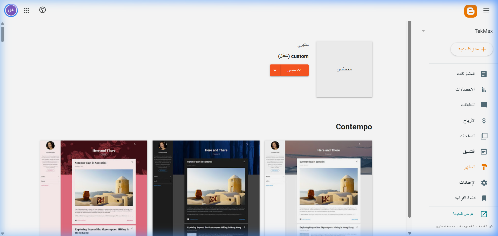
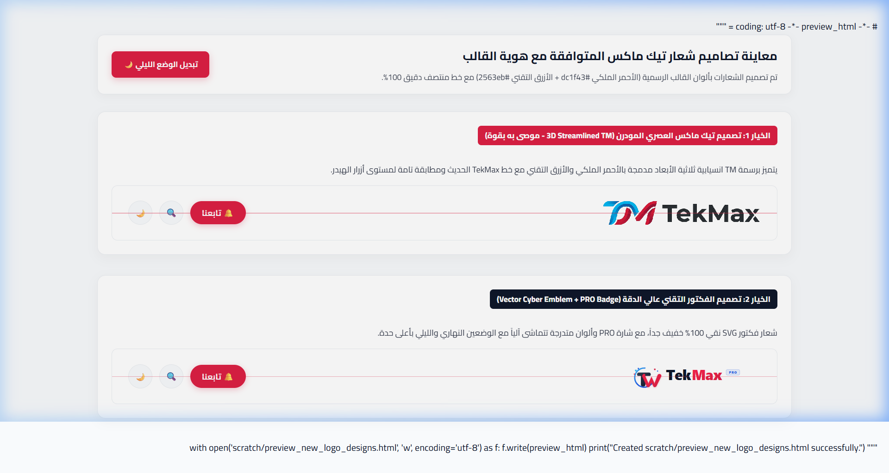
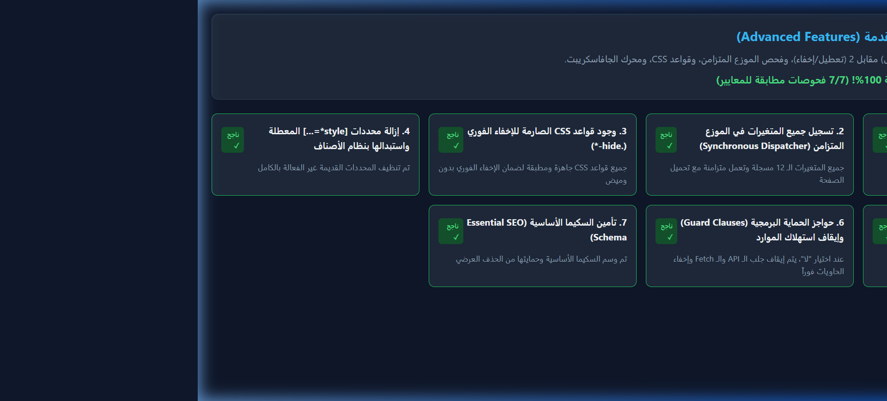
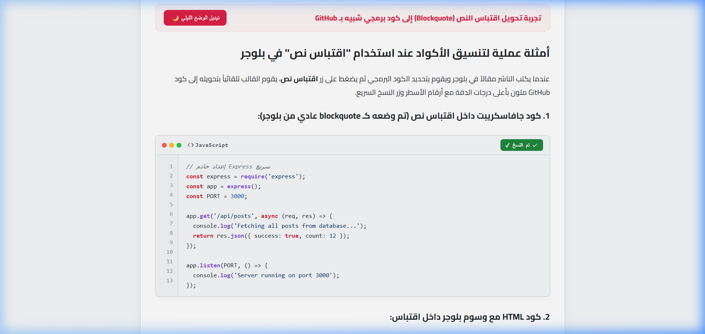
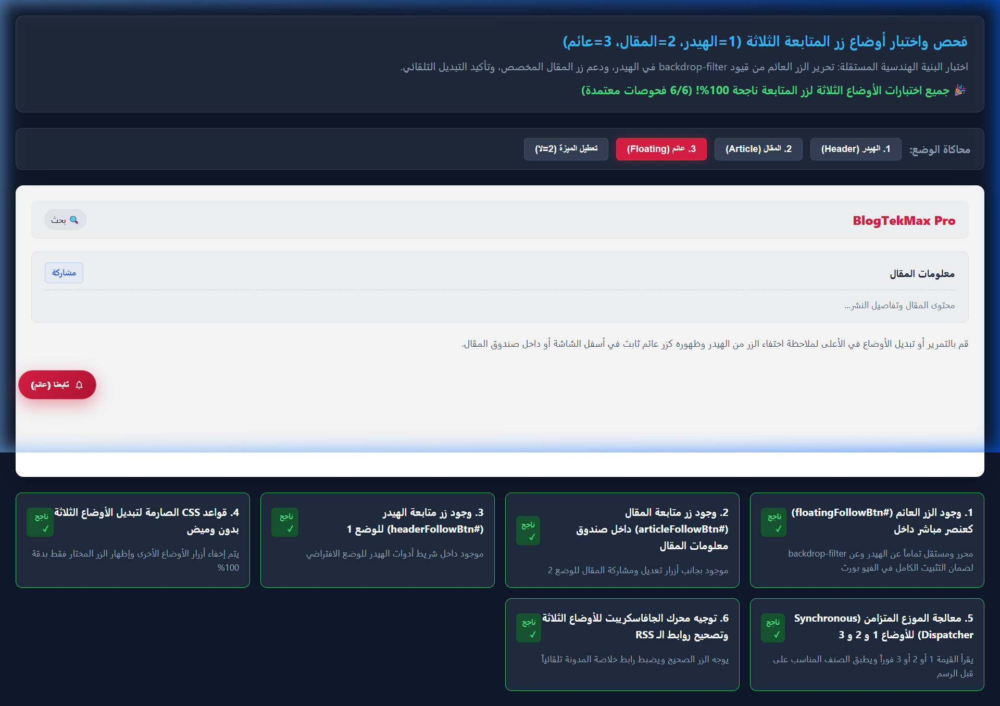

دليل استخدام وتخصيص قالب TekMax 2026: شرح جميع الميزات والإعدادات وطريقة التخصيص خطوة بخطوة
1. كيفية تركيب وتثبيت القالب في Blogger بشكل صحيح
لضمان تثبيت القالب بدون بقايا ملفات قديمة أو تعارضات في عناصر الواجهة، اتبع الخطوات القياسية المعتمدة التالية:
قبل أي تعديل، توجه إلى لوحة تحكم Blogger > المظهر (Theme)، اضغط على السهم المجاور لزر "تخصيص"، ثم اختر الاحتفاظ بنسخة احتياطية (Backup) وقم بتنزيل الملف على جهازك.
اضغط مرة أخرى على نفس القائمة المنسدلة واختر استعادة (Restore)، ثم اضغط على زر تحميل (Upload) وحدد ملف BlogTekMax Pro.xml. انتظر بضع ثوانٍ حتى تظهر لك رسالة "تمت استعادة المظهر بنجاح".

اضغط على نفس القائمة المنسدلة واختر إعدادات الجوال (Mobile Settings)، ثم اختر سطح المكتب (Desktop) واضغط "حفظ".
2. دليل إعدادات مصمم المظهر (Theme Designer Settings)
تتم كافة التخصيصات من خلال لوحة المظهر > تخصيص > متقدم (Advanced). ينقسم القالب إلى 13 مجموعة متخصصة تضم 78 متغيراً حقيقياً، وفيما يلي تفصيل كل إعداد ووظيفته والقيم المعتمدة له:
المجموعة 1: أبعاد وتخطيط القالب (Layout Settings)
| اسم المتغير (Variable) | الوظيفة وماذا يفعل | القيمة الافتراضية | القيم المقترحة |
|---|---|---|---|
contentMaxWidth |
أقصى عرض للحاوية الرئيسية للموقع | 1200px |
1140px إلى 1320px حسب كثافة المحتوى |
المجموعة 2: إعدادات القائمة الجانبية (Sidebar Controls)
تتيح لك هذه المجموعة إخفاء الشريط الجانبي وتوسيع المحتوى لعرض كامل (Full-Width) في أي قسم تريده:
| اسم المتغير | مكان التطبيق | خيارات القيمة | الافتراضي |
|---|---|---|---|
hideSidebarHome |
إخفاء القائمة الجانبية من الصفحة الرئيسية | 1 = لا (ظاهرة) / 2 = نعم (مخفية) | 1px |
hideSidebarPost |
إخفاء القائمة الجانبية من صفحة المقالات (قراءة بعرض كامل) | 1 = لا / 2 = نعم | 1px |
hideSidebarPage |
إخفاء القائمة الجانبية من الصفحات الثابتة (مثل من نحن والمكتبة) | 1 = لا / 2 = نعم | 1px |
hideSidebarMobile |
إخفاء القائمة الجانبية بالكامل على شاشات الهواتف المحمولة | 1 = لا / 2 = نعم | 1px |
المجموعة 3: ألوان القالب الرئيسية (Theme Colors)
| اسم المتغير | العنصر الذي يتحكم به | اللون الافتراضي | الرمز اللوني |
|---|---|---|---|
primaryColor |
لون الهوية الأساسي (الأزرار، الروابط النشطة، شريط التقدم) | الأحمر الملكي (Royal Crimson) | #dc1f43 |
secondaryColor |
اللون الداكن الثانوي للعناوين والفوتر | كحلي مسامي تيتانيوم | #1e2229 |
accentColor |
لون التمييز النابض والتركيز | أحمر متوهج (Vibrant Red) | #ff244d |
bodyBackground |
خلفية الموقع العامة في الوضع النهاري | أبيض ناصع | #ffffff |
surfaceColor |
خلفية بطاقات المقالات والأسطح المرتفعة | رمادي ناعم | #f8f9fa |
textColor |
لون النصوص والفقرات الأساسية | أسود كربوني عميق | #111317 |
mutedTextColor |
لون البيانات الوصفية (التواريخ، اسم الكاتب، عدد التعليقات) | رمادي متوسط مهدئ للعين | #555d6b |
borderColor |
لون الخطوط الفاصلة وحدود البطاقات | رمادي فاتح متناسق | #eaedf1 |
المجموعة 4: الخطوط والطباعة (Typography)
يدعم القالب 4 عائلات خطوط عربية فائقة الاحترافية من Google Fonts. لتغيير خط الموقع بالكامل، كل ما عليك هو تغيير قيمة المتغير fontChoice:
- القيمة 1 (1px): خط Cairo (الافتراضي) - الخط الهندسي الأكثر وضوحاً وفخامة في المواقع التقنية.
- القيمة 2 (2px): خط Tajawal - خط حديث ناعم ذو انسيابية عالية في القراءة الصحفية.
- القيمة 3 (3px): خط IBM Plex Sans Arabic - الخط التقني المعتمد لدى شركات التقنية والمطورين.
- القيمة 4 (4px): خط Noto Kufi Arabic - خط كوفي رسمي عصري ملائم للمجلات والمنصات الإخبارية.
المجموعة 5 و 6: الهيدر والشعار (Header & Navigation)
| اسم المتغير | الوظيفة والتأثير | الافتراضي | ملاحظات الاستخدام |
|---|---|---|---|
enableLogo |
تفعيل الشعار الصوري بدلاً من النص | 1px (نعم) |
1 = إظهار الصورة، 2 = نص فقط |
logoDisplayMode |
نمط عرض الشعار | 1px (شعار فقط) |
1 = شعار، 2 = اسم الموقع، 3 = كلاهما معاً |
logoWidth |
أقصى عرض للشعار على شاشات الكمبيوتر | 420px |
يمكن زيادته حتى 650px للشعارات العريضة |
logoHeight |
أقصى ارتفاع للشعار على شاشات الكمبيوتر | 80px |
شعار كبير جداً وبارز وشديد الوضوح لنسخة الكمبيوتر مع هيدر 94px |
logoMobileWidth |
عرض الشعار على شاشات الهواتف الذكية | 260px |
يضمن وضوح الشعار بالكامل على شاشات الجوال |
logoMobileHeight |
ارتفاع الشعار على شاشات الهواتف | 48px |
يتناسق بجمالية مع أزرار القائمة والبحث للجوال |

المجموعة 7: زر الصعود إلى الأعلى (Back to Top)
| اسم المتغير | الوظيفة | القيم المتاحة | الافتراضي |
|---|---|---|---|
enableBackToTop |
تفعيل ظهور زر الصعود عند التمرير | 1 = نعم / 2 = لا | 1px |
backToTopPosition |
موضع الزر في الشاشة | 1 = يسار الشاشة / 2 = يمين الشاشة | 1px |
backToTopSize |
قطر الزر الدائري | من 38px إلى 54px | 44px |
backToTopBg |
لون خلفية الزر | أي كود لوني HEX | #dc1f43 |
المجموعة 8: قسم "اقرأ أيضاً" المدمج في المقال (In-Article Related)
| اسم المتغير | الوظيفة | القيم والخيارات | الافتراضي |
|---|---|---|---|
enableInArticleRelated |
تفعيل الصندوق التلقائي بين الفقرات | 1 = نعم / 2 = لا | 1px |
inArticleRelatedPos |
موقع انغراس الصندوق داخل المقال | 1 = في منتصف المقال (50%) 2 = بعد ربع المحتوى (25%) 3 = عند (40%) 4 = عند (60%) |
1px |
inArticleRelatedCount |
عدد المقالات المقترحة المعروضة | من مقال واحد حتى 5 مقالات | 2px (مقالين) |
inArticleShowThumb |
إظهار صورة مصغرة للمقال المقترح | 1 = نعم / 2 = لا | 1px |
المجموعات 10 و 12: إعدادات TekMax 2.0 والميزات المتقدمة
تمثل هذه المجموعة لوحة التحكم الذكية بكافة الوظائف التفاعلية الدقيقة للمقال:
| اسم المتغير | الوظيفة الحصرية | خيارات التبديل | الافتراضي |
|---|---|---|---|
enableTOC |
تفعيل جدول المحتويات التلقائي للمقال | 1 = نعم / 2 = لا | 1px |
enableReadingProgress |
تفعيل شريط تقدم القراءة العلوي | 1 = نعم / 2 = لا | 1px |
enableSyntaxHighlight |
تفعيل ملوّن الشفرات البرمجية بنمط GitHub | 1 = نعم / 2 = لا | 1px |
enableCodeCopy |
تفعيل زر النسخ السريع للأكواد بنقرة واحدة | 1 = نعم / 2 = لا | 1px |
enablePostInfo |
تفعيل صندوق معلومات المقال العلوي | 1 = نعم / 2 = لا | 1px |
showPublishDate |
إظهار تاريخ النشر الأصلي | 1 = نعم / 2 = لا | 1px |
showUpdatedDate |
إظهار تاريخ آخر تحديث للمقال | 1 = نعم / 2 = لا | 1px |
showReadingTime |
إظهار بطاقة وقت القراءة المقدر | 1 = نعم / 2 = لا | 1px |
enablePrintButton |
إظهار بطاقة طباعة المقال السريعة | 1 = نعم / 2 = لا | 1px |
enableEditPost |
إظهار زر تحرير المقال الإداري السريع | 1 = نعم / 2 = لا | 1px |
enableFollowButton |
تفعيل نظام زر متابعة الموقع | 1 = نعم / 2 = لا | 1px |
followButtonPosition |
موضع زر المتابعة الذكي | 1 = في الهيدر 2 = داخل صندوق المقال 3 = زر عائم في الشاشة |
1px |
enableSmart404 |
تفعيل صفحة الخطأ 404 الذكية مع اقتراح مقالات بديلة | 1 = نعم / 2 = لا | 1px |
enablePagination |
تفعيل ترقيم الصفحات الرقمي | 1 = نعم / 2 = لا | 1px |

3. خريطة ودجات وتنسيق بلوجر (Blogger Layout Map)
عند التوجه إلى لوحة Blogger > التنسيق (Layout)، ستجد هيكلاً منظماً يضم 25 قسماً و 27 ودجت تتيح لك تخصيص المحتوى بالسحب والإفلات:
- أدوات الشريط العلوي:
LinkList10(روابط الشريط العلوي): لإضافة روابط الصفحات الأساسية مثل "من نحن"، "اتصل بنا".LinkList11(أيقونات التواصل): لإضافة روابط حساباتك (فيسبوك، تويتر، يوتيوب...) حيث يتعرف القالب تلقائياً على اسم الموقع ويضع أيقونته SVG.
- الهيدر وشريط التنقل:
Header1: لرفع شعار الموقع وتعيين عنوان ووصف المدونة.LinkList1(قائمة التنقل): لإضافة أقسام وتصنيفات الموقع، ويدعم القوائم المنسدلة الفرعية بكتابة شرطة سفلية قبل اسم الرابط مثل:_قسم فرعي.LinkList100(زر تابعنا): لتحديد الرابط الذي يفتح عند نقر زر المتابعة.
- سلايدر Hero والأقسام الترويجية:
PopularPosts99(سلايدر المحتوى المميز): لعرض المقالات المميزة في شبكة Hero Bento Grid.PopularPosts2(الأكثر رواجاً): يغذي شريط الأخبار الرائجة أسفل السلايدر.
- الشريط الجانبي (Sidebar):
PopularPosts1(اختيارات المحرر): يعرض المقالات الأكثر قراءة في السايدبار.Label1(التصنيفات الشائعة): يعرض سحابة وسوم وتصنيفات المدونة بنمط كبسولات أنيقة مع عداد المقالات.Profile1(عن الكاتب): يعرض صورة ونبذة تعريفية عن صاحب المدونة.
4. كيفية استخدام ميزات القالب أثناء كتابة المقالات
لست بحاجة لتثبيت أي إضافات خارجية. أثناء كتابة المقال داخل محرر بلوجر:
- اكتب الكود البرمجي الخاص بك أو الصقه في المحرر.
- حدد نص الكود بالكامل، ثم اضغط على زر اقتباس نص (Quote /
<blockquote>) من شريط أدوات بلوجر. - (اختياري) لتحديد لغة البرمجة بدقة، اكتب في أول سطر من الكود اسم اللغة بين قوسين معقوفين مثل
[python]أو[html]أو[css]. - بمجرد حفظ المقال أو معاينته، سيتحول الاقتباس تلقائياً إلى صندوق كود GitHub متطور مع أزرار ماك وعمود أرقام الأسطر وزر النسخ السريع!

يعمل جدول المحتويات بصورة ذاتية 100%؛ كل ما عليك هو تنسيق عناوين وفقرات مقالك باستخدام عناوين بلوجر القياسية:
- استخدم عنوان رئيسي (Heading) للعناوين الأساسية للمقال (تُولد كوسم
<h2>). - استخدم عنوان فرعي (Subheading) للنقاط المتفرعة (تُولد كوسم
<h3>). - سيقوم القالب تلقائياً ببناء الفهرس الرقمي أعلى المقال مع إمكانية الفتح والإغلاق والتمرير السلس.
إذا كنت تريد توجيه الزوار لمتابعة قناتك على تيليجرام أو حسابك على إكس أو نشرتك البريدية:
- توجه إلى المظهر > تخصيص > متقدم > الميزات المتقدمة.
- ابحث عن
followButtonPosition:- ضع القيمة 1 ليظهر الزر في الهيدر العلوي بجانب البحث.
- ضع القيمة 2 ليظهر داخل صندوق معلومات المقال بجانب زر المشاركة.
- ضع القيمة 3 ليظهر كزر عائم ثابت في أسفل يسار الشاشة طوال تصفح الزائر.
- توجه إلى التنسيق > زر تابعنا (LinkList100) واكتب الرابط المستهدف.

5. نظام الإعلانات الذكي ومواقع الظهور (TMSmartAdsEngine)
يمتلك القالب نظام إعلانات ذكي محمي من انزياح التخطيط (Zero-CLS)؛ حيث تم حجز ارتفاع مسبق لكل صندوق إعلاني لمنع قفز المحتوى عند تحميل إعلانات AdSense:
| معرف الودجت في التنسيق | موقع ظهور الإعلان | المقاس الموصى به | نوع الدمج |
|---|---|---|---|
HTML202 |
أسفل الهيدر مباشرة (كافة الصفحات) | 728×90 أو تجاوبي (Responsive) | ثابت محجوز الأبعاد |
HTML203 |
أعلى الصفحة الرئيسية (بين الهيرو والمقالات) | 728×90 أو 970×90 | ثابت للرئيسية فقط |
HTML304 |
منتصف الرئيسية (بين بطاقات المقالات) | إعلان التغذية (In-Feed Ad) | مدمج بالتغذية الإخبارية |
HTML204 |
أعلى المقال (قبل بداية النص) | Responsive أو 336×280 | داخل صفحة المقال |
HTML205 |
داخل المقال 1 (تلقائي ذكي بعد الفقرة الثانية) | Responsive تلقائي | حقن ذكي عبر TMSmartAdsEngine |
HTML206 |
داخل المقال 2 (في منتصف نص المقال) | Responsive تلقائي | حقن ذكي بمنتصف الفقرات |
HTML207 |
أسفل المقال (مباشرة بعد نهاية المحتوى) | 728×90 أو 300×250 | داخل صفحة المقال |
HTML310 |
أعلى الشريط الجانبي (Sticky / ثابت) | 300×250 أو 300×600 | في السايدبار |
HTML210 |
الفوتر (أسفل الموقع قبل حقوق النشر) | 728×90 أو تجاوبي عريض | في كافة الصفحات |
[ إعلان ] - داخل المقال 1 وضع شفرة إعلان Google AdSense داخلها واضغط حفظ. سيقوم محرك TMSmartAdsEngine بحساب عدد فقرات المقال وغرس الإعلان في الموضع المثالي دون التأثير على سرعة القراءة!
6. نصائح لتحقيق أعلى أداء وسرعة 100/100 مع قالب TekMax
للحفاظ على الدرجات الخضراء الفائقة في Google PageSpeed ومؤشرات Core Web Vitals، ننصح باتباع القواعد التالية:
- استخدم صيغة WebP للصور: احرص دائماً على رفع صور المقالات بصيغة
.webpالحديثة لتقليل حجم الصور بأكثر من 70% مقارنة بـ JPG و PNG التقليدية. - التزم بنسب الأبعاد الثابتة: يفضل أن تكون الصور البارزة للمقالات بأبعاد
1200×675بكسل أو800×450بكسل (نسبة 16:9) لضمان ملائمتها لشبكة القالب ومنع أي انزياح بصري. - تجنب الإضافات الخارجية والسكريبتات المجهولة: قالب TekMax مزود بكافة الميزات داخلياً (أكواد، مشاركة، خطوط، فهرس، وضع ليلي) بدون أي حاجة لاستدعاء مكتبات jQuery أو FontAwesome الخارجية التي تبطئ الموقع وتضر بالسيو.
- اكتب نصوص Alt وصفية للصور: عند إدراج أي صورة في المقال، احرص على كتابة النص البديل (Alt text) بدقة لمساعدة محركات البحث وزيادة درجة السيو وإمكانية الوصول إلى 100%.
7. إعداد الصفحات الثابتة الاحترافية وتفعيل روابط الفوتر
تعد الصفحات الثابتة ركيزة أساسية لقبول مدونتك في Google AdSense، واكتمال متطلبات السيو الفني ومطابقة معايير الخصوصية العالمية (GDPR و CCPA). يوفر قالب TekMax Pro حزمة متكاملة من 4 صفحات ثابتة تم تصميمها بهندسة برمجية متطورة، وتوافق تام مع الوضع الليلي (Dark Mode) وبنية متجاوبة بنسبة 100%:
| اسم الصفحة | الملف المصدري | الرابط الثابت الموصى به (Permalink) | الوظيفة وأهم الميزات |
|---|---|---|---|
| اتصل بنا (Contact Us) | pages/contact.html |
/p/contact.html (اكتب: contact) |
بطاقات معلومات التواصل، قنوات الدعم، نموذج مراسلة ذكي بتحقق لحظي، تنبيه نجاح فوري ودعم Mailto بديل. |
| من نحن (About Us) | pages/about.html |
/p/about.html (اكتب: about) |
قصة المنصة، أركان الرؤية والرسالة والقيم، عدادات إحصائيات تقنية، ومجالات التغطية المتخصصة. |
| سياسة الخصوصية (Privacy Policy) | pages/privacy-policy.html |
/p/privacy-policy.html (اكتب: privacy-policy) |
مطابقة 100% لمعايير Google AdSense (ملفات تعريف DART)، لوائح GDPR، حماية الأطفال COPPA، وحقوق المستخدم. |
| شروط الاستخدام (Terms of Use) | pages/terms.html |
/p/terms.html (اكتب: terms) |
بنود الملكية الفكرية وحماية المحتوى، شروط الاستخدام المقبول، إخلاء المسؤولية القانوني والتقني، والروابط الخارجية. |
| الأرشيف وخريطة الموقع | pages/archive.html |
/p/archive.html (اكتب: archive) |
فهرس شامل لجميع مقالات المدونة مصنفة زمنياً حسب السنوات والأشهر للزوار ومحركات البحث. |
📌 خطوات إنشاء ونشر الصفحة الثابتة في Blogger خطوة بخطوة
من القائمة الجانبية للوحة تحكم Blogger، اضغط على الصفحات (Pages) ثم اضغط على زر + صفحة جديدة (+ New page) في الأعلى.
اكتب عنوان الصفحة في شريط العنوان (مثلاً: اتصل بنا أو سياسة الخصوصية). بعد ذلك اضغط على أيقونة القلم أعلى اليمين واختر عرض HTML (HTML view) لفتح محرر الأكواد المباشر.
افتح ملف الصفحة المقابل في مجلد pages/ (مثال: pages/contact.html)، انسخ كامل الكود الداخلي، ثم ألصقه في محرر Blogger مستبدلاً أي نصوص أو أسطر سابقة.
في العمود الجانبي الأيسر لإعدادات الصفحة:
- اضغط على الرابط الثابت (Permalink) واختر رابط ثابت مخصص (Custom Permalink) واكتب الاسم بالإنجليزية بأحرف صغيرة (مثال:
contactلإنتاج الرابط/p/contact.html). - اضغط على قسم خيارات (Options) واختر عدم السماح بالتعليقات، وإخفاء التعليقات الحالية لإعطاء الصفحة مظهراً رسمياً مخصصاً للمعلومات.
اضغط على زر نشر (Publish) باللون البرتقالي في أعلى اليسار. مبروك! أصبحت صفحتك جاهزة ومتوافقة تلقائياً مع نظام القالب بالكامل.
LinkList2) بجميع روابط الصفحات الثابتة المذكورة أعلاه. بمجرد نشر الصفحات بنفس الروابط المحددة، ستعمل جميع روابط أسفل الموقع بشكل فوري وتلقائي دون الحاجة لأي تعديل برمجي!